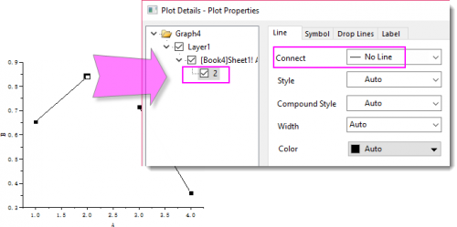

FAQ-986 Wie entferne ich die Linie zwischen zwei Punkten auf einem Punkt-Liniendiagramm?
Remove-Line-Between-Points
Letztes Update: 08.01.2019
Nachdem Sie ein Punkt-Liniendiagramm gezeichnet haben, können Sie wählen, ob Sie das Liniensegment hinter einem speziellen Punkt verbergen möchten. Dies tun Sie folgendermaßen:
- STRG + Doppelklick auf den Anfangspunkt, von dem aus die Verbindungslinie entfernt werden soll. Der Dialog Details Zeichnung wird geöffnet, wobei dieser Punkt als der spezielle Punkt ausgewählt ist.
- Legen Sie auf der Registerkarte Linie für Verbinden die Option Keine Linie fest.
- 
 |
Wenn Sie Origin 2019 oder eine ältere Version verwenden, können Sie eine der folgenden zwei Methoden wählen, um die Linie zwischen den zwei Punkten zu entfernen:
- Klicken Sie im Quellarbeitsblatt auf die Zeile des Endpunkts, von dem Sie die Verbindungslinie entfernen möchten, und wählen Sie Einfügen, um eine leere Zeile einzufügen.
Oder
- Drücken Sie im Quellarbeitsblatt die STRG-Taste und wählen Sie die zwei Teile des Datensatzes separat, um dann ein Punkt-Liniendiagramm zu zeichnen
|
Schlüsselwörter:Linie entfernen, Verbindungslinie unterbrechen, nicht durchgehende Linie, separate Abschnitte